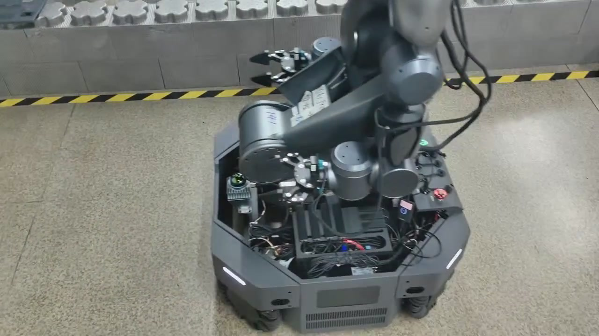

Nav2 导航
到达充电桩附近
AUTONOMOUS DOCKING
串联导航到桩、视觉对接与电流确认，让机器人自主完成充电任务。
我的工作开发视觉对接算法，串联控制与充电反馈，完成项目交付。

实机演示 · 自主对接充电桩
SYSTEM / 整体框架
ROS2 连接视觉、底盘控制和电池反馈，状态机统一调度。
到达充电桩附近
识别 ArUco 标记
gRPC 电流数据
PnP + 三码融合 + TF
x / y / yaw 三轴 P 控制
导航、对接、确认、退桩
速度指令 → 对准接口
位姿复检 + 电流确认
METHOD / 核心思路
将近距离动作组织成“测量—调整—停车复检”的闭环。
ArUco + PnP 解算位姿，融合三码测量；两次检测校验一致性并平均位姿。
x、y、yaw 三轴 P 控制：先粗调，停车复检，再根据剩余误差微调。
状态机管理充电确认与退桩，并为检测、等待和对接设置超时出口。
DEMO / 运行演示
两段视频展示算法运行过程与真实充电桩对接。